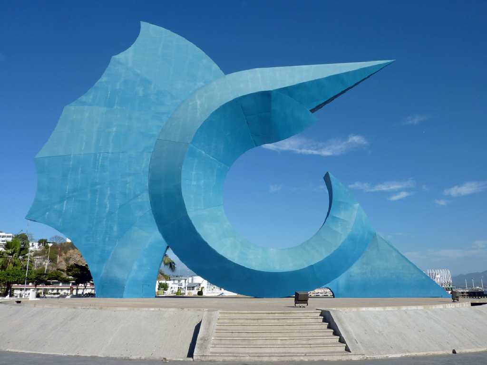
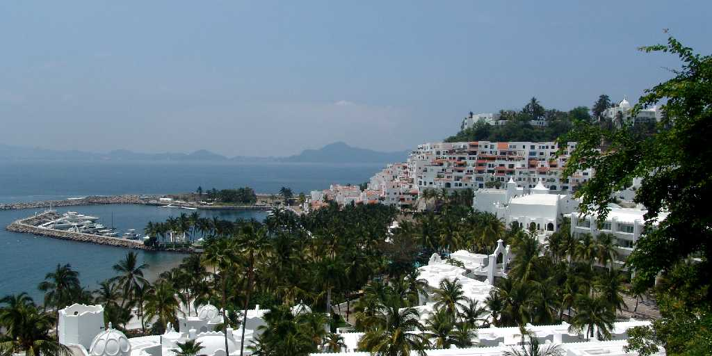

Pez Vela Manzanillo
メキシコの太平洋側の漁港として栄え毎年カジキ釣の世界大会が催される

Las Hadas Manzanillo
メキシコの富裕層に人気のあるリゾート地となりプライベートビーチを持つホテルが建ち並びゴルフやヨットのトーナメント等も開かれている
October 3 2010 Miramar Manzanillo
SS Oceanic in Manzanillo Port